Стр.
Руководство по программе «Опросник»
Содержание
Общее описание
Настройка данных сотрудников.
Настройка описаний характеристик
Настройка опроса
Опрос служащих
Отчеты
1. Общее описание
Программа предназначена для обучения и проверки знаний терминов товаров. Так же может использоваться как справочное средство. Каждый товар имеет какие-то технические характеристики. Каждая характеристика имеет техническое описание и в чем она выгодна для покупателя. Продавец должен знать оба этих качества характеристики. Другими словами, не углубляясь в технические детали, на простом языке, объяснить покупателю преимущества конкретного товара.
Проверка знаний делается следующим образом. Служащему, при входе на сайт, задаются вопросы о той или иной хар-ке с вариантами ответов. После выбора ответа, показывается результат (правильно/неправильно) и описание хар-ки. На каждую рабочую смену задается плановое кол-во вопросов.
Например: Сотрудник в месяц должен отработать 20 смен, и месячный план для него составляет 60 вопросов. Таким образом каждую рабочую смену ему будет задано по три вопроса.
Результаты опроса фиксируются и в любой момент доступен для полномочных сотрудников отчет о результатах .
2. Общая настройка
В программе все сотрудники делятся на две категории: администраторы и продавцы. В зависимости от роли внешний вид программы будет разным.
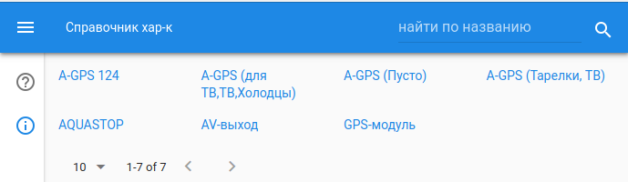
Экран для продавцов
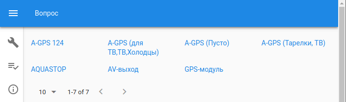
Экран администраторов
Экраны отличаются возможностями (панель слева).
Для продавцов доступны кнопка ответа на вопрос и кнопка доступа к справочнику хар-к.
Для администраторов, также доступа к справочнику хар-к, и настройка программы, кнопка отчетов.
Для каждого сотрудника, помимо роли, нужно задать имя, подразделение и пароль.
Подразделение
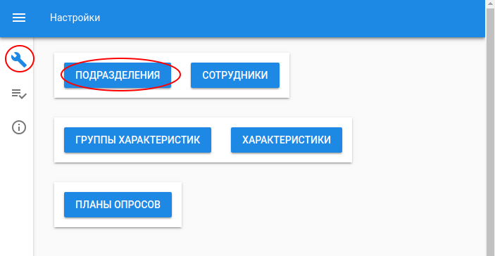
Доступ к настройке
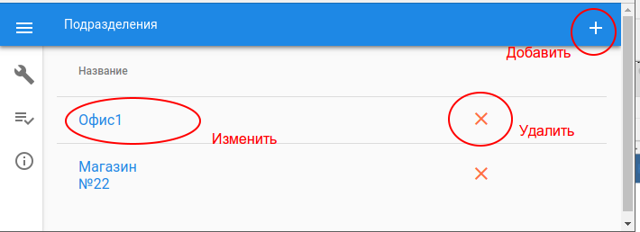
Управление
Сотрудники
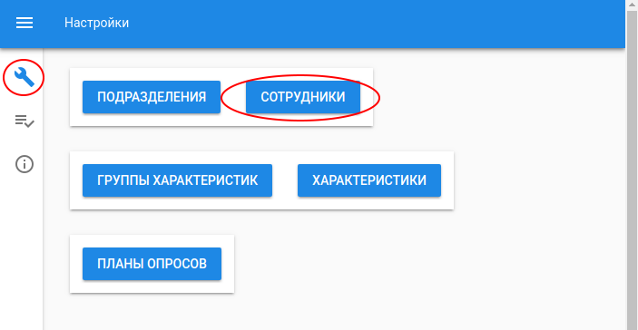
Доступ к настройке
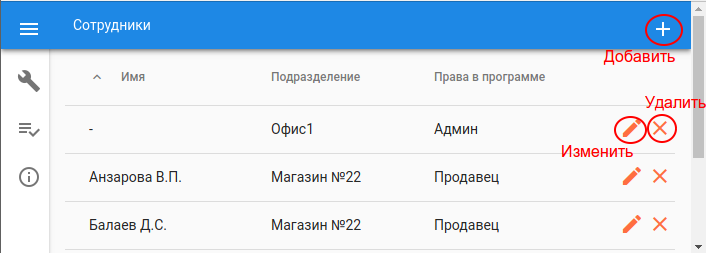
Управление
При нажатии на кнопку «Добавить» или «Изменить» появится диалог ввода параметров сотрудника:
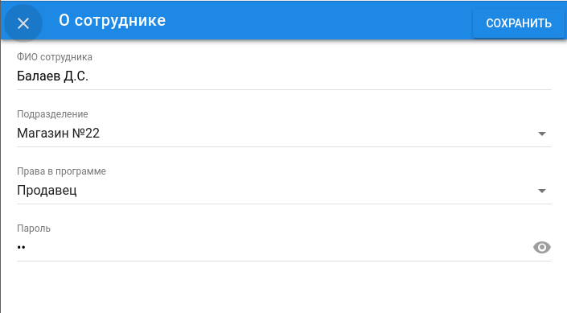
По завершении нажать кнопку «Сохранить»
3. Настройка характеристик
Характеристика описывается следующими свойствами:
Название
Группа товаров
Техническое описание
Выгода покупателя
Контрольный вопросов
Варианты ответов
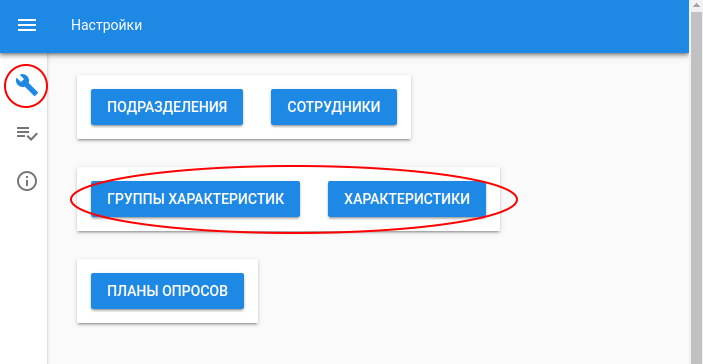
Доступ к настройкам
Группы характеристик
Сначала нужно настроить группы характеристик. Это группы, которые как-то группируют характеристики по сути (например: группы товаров, бренды). Имеют двухуровневую структуру: Метагруппа → Подгруппы. Например: Метагруппа «Малая бытовая техника» может иметь подгруппы «Чайники», «Мультиварки» и т. п. Или метагруппа «Теле-, видео- товары» может иметь подгруппы «Телевизоры LED», «Плазмы»
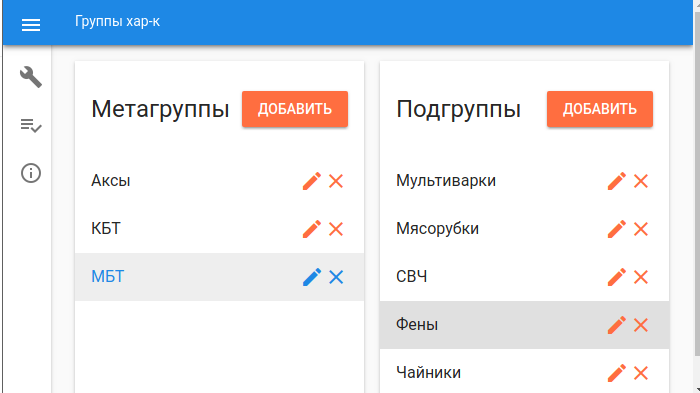
Управление группами
Характеристика
Для редактирования сначала нужно найти нужную или создать новую
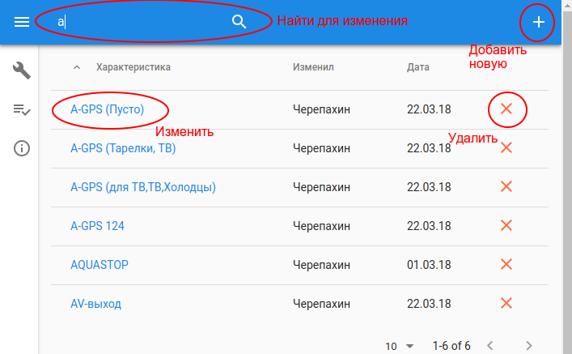
Выбор целевой характеристики
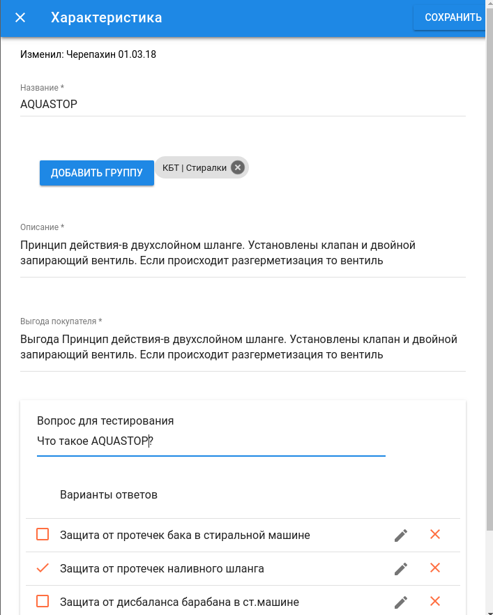
Редактирование характеристики
4. Настройка опроса
На каждого сотрудника создается план опроса на месяц. При входе в программу продавцу задается какое-то количество вопросов. Ежедневное количество вопросов вычисляется из количества рабочих смен продавца и общего количества вопросов в месяц. Таким образом эти цифры должны быть заданы каждый месяц.
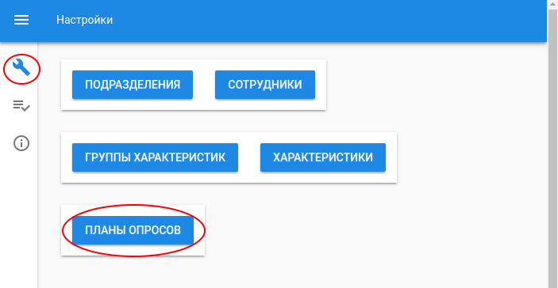
Доступ к плану опроса
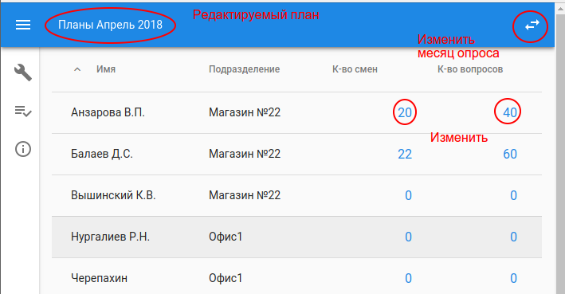
Управление планом
Если количество смен или кол-во вопросов равны 0, то сотрудник не участвует в опросе.
5. Опрос
При входе в программу продавцу задаются вопросы
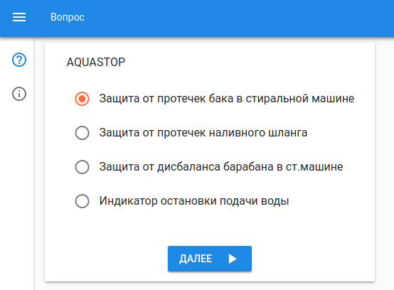
Продавец должен отметить ответ, который он считает правильным и нажать кнопку «Далее». Появится результат вопроса (правильный/неправильный) и объяснение характеристики.
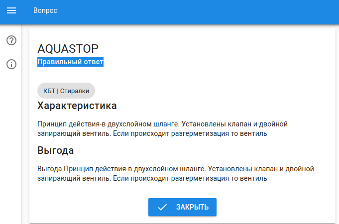
При нажатии кнопки «Закрыть», либо будет заданы еще вопросы (если дневной план опроса не выполнен), либо сообщение «На сегодня вопросов нет.»
6. Отчеты
Доступны через кнопку «Отчеты»
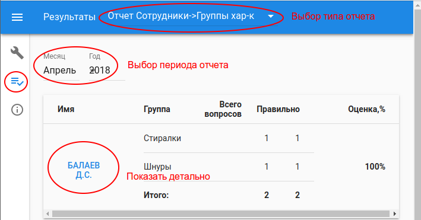
Доступ и управление